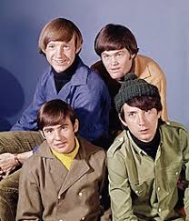
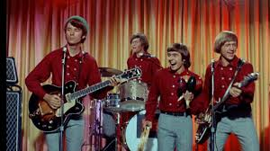
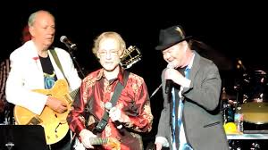

 The Monkees are an American rock and pop band originally active between 1966 and 1971, with reunion albums and tours in the decades that followed. They were formed in Los Angeles in 1965 by Bob Rafelson and Bert Schneider for the American television series The Monkees which aired from 1966 to 1968. The musical acting quartet was composed of Americans Micky Dolenz, Michael Nesmith, and Peter Tork; and British actor and singer Davy Jones. The band's music was initially supervised by producer Don Kirshner, backed by the songwriting duo of Tommy Boyce and Bobby Hart.
 The four actor-musicians were allowed only limited roles in the recording studio for the first few months of their five-year career as "the Monkees". This was due in part to the amount of time required to film the television series. Nonetheless, Nesmith did compose and produce some songs from the beginning, and Peter Tork contributed limited guitar work on the sessions produced by Nesmith. They eventually fought for the right to collectively supervise all musical output under the band's name. The television show was canceled in 1968, but the band continued to record music through 1971.
 A revival of interest in the television show came in 1986, which led to a series of reunion tours and new records. The group reunited and toured several times with varying degrees of success. The Monkees continued to tour through their 2016 50th Anniverary, with Dolenz and Tork forming the core of the band and Nesmith continuing to join them occasionally.
Dolenz described the Monkees as initially being "a TV show about an imaginary band… that wanted to be the Beatles that was never successful". Ironically, the actor-musicians became one of the most successful bands of the 1960s. The Monkees have sold more than 75 million records worldwide and had many international hits.